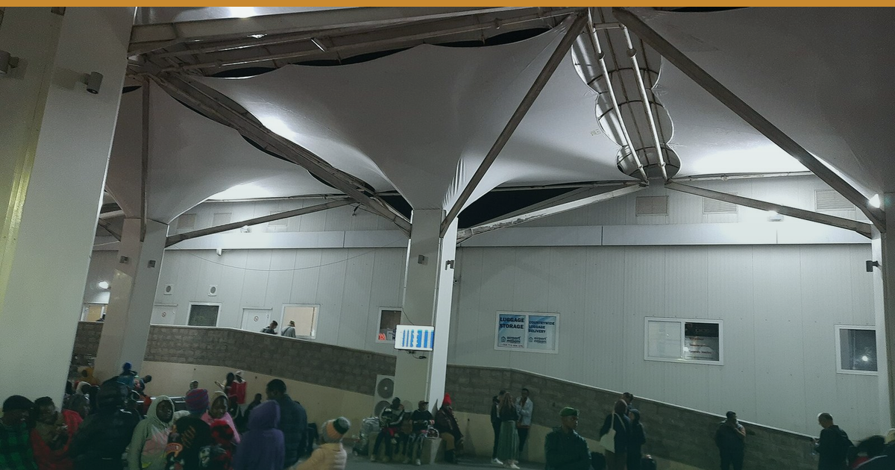

Photo: Gikü · Wikimedia Commons · CC0
Seven Killed in Samburu Safari-helicopter Crash — KCAA Investigating.
🌅 EA HOSPITALITY PULSE — Morning Brief
🗓 Thursday 20 August 2026 | 🇰🇪 🇺🇬 🌍
A fatal safari-helicopter crash puts fly-in aviation back at the centre of the premium-safari risk conversation.
━━━━━━━━━
1️⃣ 🇰🇪 SEVEN KILLED IN SAMBURU SAFARI-HELICOPTER CRASH — KCAA INVESTIGATING
A Eurocopter EC130 B4 operated by Lady Lori Helicopters, carrying &Beyond guests, came down near Mount Ololokwe in Samburu at about 09:13 on Wednesday 19 August, on a charter from Loisaba Conservancy to the Ewaso Nyiro area. All seven aboard died — five Americans (including a Telemundo/NBCUniversal executive), Ecuador's national intelligence chief and his wife, and the Kenyan pilot. The KCAA has opened an investigation; the cause is undetermined (CNN, Al Jazeera, CBS, 19 Aug).
This is the second fatal tourist-air crash in under a year, after the October 2025 Mombasa Air Safari crash near the Maasai Mara that killed 11. Premium fly-in safari runs on exactly this light-aircraft and helicopter airlift.
🏷 Bush · Kenya · Confirmed (KCAA / international press, 19 Aug)
🎯 So what: Do not speculate on cause — it undermines you when the report lands. Brief guest-facing teams on the facts and on your charter partners' certification and KCAA oversight; have ground-transfer contingencies ready for VIP arrivals expecting a heli/light-aircraft leg. Expect closer KCAA scrutiny of charter operators in the coming weeks.
⚠️ Early signal, unconfirmed: after two fatal incidents in ten months, upward pressure on aviation-insurance premiums for light-aircraft and helicopter charter is plausible — but we have seen no rate filing. Watch it; don't price it into 2027 contracts yet.
2️⃣ 🇺🇬 KASESE ROOM CRUNCH AS RWENZORI MARATHON DRAWS 45 COUNTRIES
Government and organisers flag an accommodation shortfall in Kasese ahead of the Tusker Lite Mt Rwenzori Marathon on Saturday 22 August, with runners from roughly 45 countries (APO/ATTA; Africa24, mid-Aug). Kasese's bed stock is thin for the weekend.
🏷 City/Bush · Uganda · Confirmed (organiser/govt, mid-Aug)
🎯 So what: Genuine short compression. Hold rate on remaining Kasese inventory and price overflow into Queen Elizabeth NP lodges and Fort Portal; sell the marathon as a QENP/Kazinga extension rather than a one-night stay.
━━━━━━━━━
✅ STILL TRUE — No EA advisory moved overnight. Kenya US Level 2 (core corridors, Diani, Watamu clear); Uganda Level 4 (regional Ebola grounds); Tanzania & Zanzibar Level 3 (since 31 Oct 2025); Rwanda Level 3. An aviation accident is not an advisory event — don't let a guest conflate them (advisory board, verified 12 Aug).
⚡ COST PULSE — Nairobi diesel holds KSh 217.86/L to 14 Sep, ~KSh 14.28/L above landed-cost parity — refuse any supplier fuel surcharge (EPRA, 14 Aug).
🎤 MICE WATCH — 22 Aug Rwenzori Marathon, Kasese · 26–28 Aug Africa Global PR Week, Nairobi · 28 Aug WTA Africa Gala, Zanzibar · 4 Sep Kwita Izina, Musanze.
🔗 This edition on the web: https://eahospitalitypulse.com/editions/pulse-2026-08-20-morning.html
— EA Hospitality Pulse | Daily intelligence for city, bush & beach properties
📣 Telegram (full editions) 💬 WhatsApp (daily skim) 💼 LinkedIn (the Big Read) 🗂 Every edition